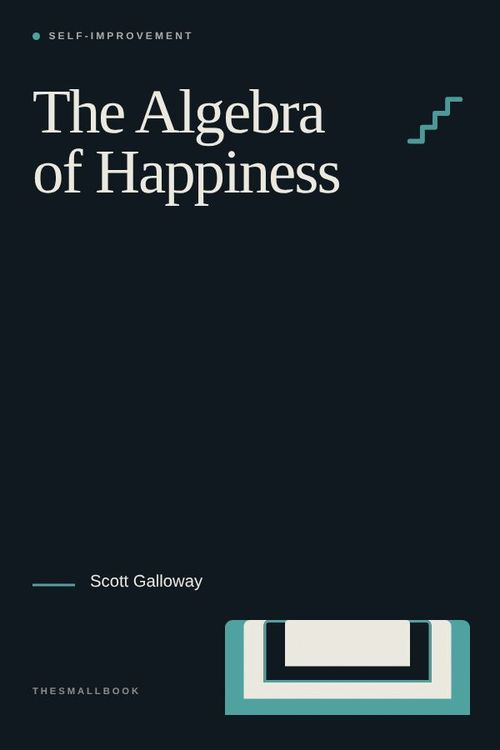
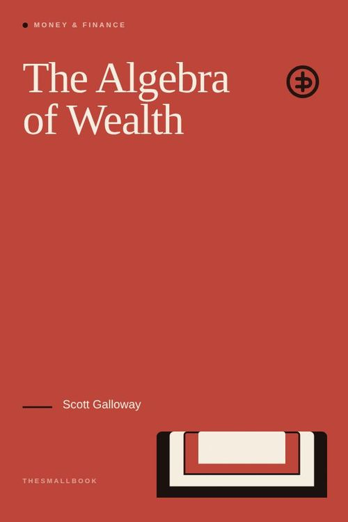

Library › Authors › Scott Galloway
Books by Scott Galloway
Scott Galloway has 2 books in the library. Every book here is read down to the big idea, the lessons, the lines worth keeping and the actions worth taking. Start with the summary, then buy the full book if it earns a place on your shelf.

The Algebra of Happiness
2019 · 11 min · 8 lessons
Scott Galloway treats happiness as partly solvable, with a few variables that respond to effort and a few that do not.
Galloway's frame is deliberately unromantic. Money cannot buy happiness, and the absence of money reliably buys unhappiness. Time is the only non renewable input. Relationships compound like capital and are built when nothing is wrong. The book is an argument for putting effort where the returns actually are, and for making peace with the middle of a life rather than chasing the peaks.
Lessons in the summary
- Some Things Are Arithmetic
- Time Is the Only Real Currency
- Deposits Before You Need Them
- Status Is Borrowed
- The Cost of Failing Is Small
- Save Like an Adult
- The Middle of Life
- What Algebra Cannot Reach
Lines worth keeping
- Time is the only asset that cannot be replenished.
- Make deposits in relationships when nothing is wrong.
- Comparison is a tax you choose to pay.

The Algebra of Wealth
2024 · 11 min · 10 lessons
Wealth is not luck or genius. It is an equation: focus on income, live with stoic discipline, let time compound and diversify so one mistake cannot ruin you.
Scott Galloway, a professor and serial entrepreneur, says economic security is the foundation for everything else: relationships, health, freedom. He reduces wealth building to an equation: Wealth equals Focus plus Stoicism multiplied by Time and Diversification. Focus means building a high income through the right career choices. Stoicism means character: spending less than you earn, avoiding status traps and building good habits. Time means starting early and letting compounding work. Diversification means not...
Lessons in the summary
- Define Wealth Correctly: Passive Income Over Burn
- Focus: Follow Your Talent, Not Your Passion
- Choose Cities, Companies and Bosses Carefully
- Stoicism: Character Is the Real Wealth Tool
- Build Habits That Make Saving Automatic
- Time: Compounding Is the Eighth Wonder
- Respect Inflation and the Cost of Waiting
- Diversification: Do Not Bet the House
- Avoid Trading and Speculation Traps
- Wealth Is a Means to Relationships and Freedom
Lines worth keeping
- Wealth is not what you spend. It is what you do not spend.
- Do not follow your passion. Follow your talent, and passion will follow.
- Rich is a number. Wealthy is when your passive income exceeds your burn.
Questions Scott Galloway helps answer
Read nearby authors next
- Tony Robbins 3 books
- Amish Tripathi 6 books
- Robin Sharma 5 books
- A.P.J. Abdul Kalam 4 books
- Adam Grant 4 books
- Cal Newport 4 books
- Chetan Bhagat 4 books
- Nassim Nicholas Taleb 4 books
Questions Scott Galloway helps answer
Where should I start with Scott Galloway? Start with The Algebra of Happiness: Scott Galloway treats happiness as partly solvable, with a few variables that respond to effort and a few that do not.